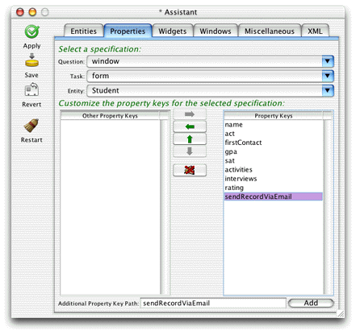
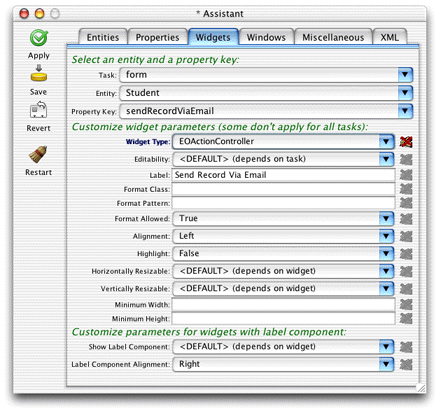
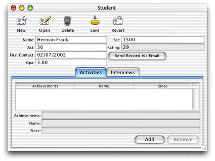
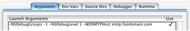

Using Assistant is the easiest, fastest, but least flexible way to add an action to an application. Follow these steps to do it:
Figure 5-25 Add property key for new action
Figure 5-26 Change the widget type of the new property key
sendRecordViaEmail,
in the client-side business logic class for that entity (businesslogic.client.Student in
this case).Figure 5-27 The new property key as an EOActionController
Make a new student record or open an existing record and click
the new button. If you started the client application from the command
line, you see an IllegalArugmentException is
thrown, stating that the method sendRecordViaEmail can't
be found. (In Mac OS X, client applications started automatically
by the WOAutoOpenClientApplication mechanism
send exceptions to the console.) So, you need to add it to your
client-side business logic class.
Add this method in the client-side Student.java file:
public void sendRecordViaEmail() {
_distributedObjectStore().invokeRemoteMethodWithKeyPath(new
EOEditingContext(), "session", "clientSideRequestSendRecordViaEmail", new
Class[] {EOEnterpriseObject.class}, new Object[] {this}, true);
}
This method invokes the method you added to your Session.java class.
It sends the enterprise object from which the action originated
(the this parameter)
and pushes the state of the client-side editing context to the server-side
editing context (the true parameter).
See the API reference documentation for invokeRemoteMethodWithKeyPath for detailed
descriptions of each parameter.
In the code listing above, you'll notice that the remote
method invocation is made on an object returned from the method _distributedObjectStore().
You need to add this method to the client-side Student.java class:
private EODistributedObjectStore _distributedObjectStore() {
EOObjectStore objectStore = EOEditingContext.defaultParentObjectStore();
if ((objectStore == null) || (!(objectStore instanceof EODistributedObjectStore)))
{
throw new IllegalStateException("Default parent object store needs to be an
EODistributedObjectStore");
}
return (EODistributedObjectStore)objectStore;
}
Client-side remote methods that are not invoked on business
logic classes (on subclasses of EOCustomObject) are invoked on the
client's distributed object store. For instance, in an EOGenericRecord
subclass, you can use the method invokeRemoteMethod(String methodName, Class[] argumentTypes, Object[] arguments),
which invokes a method named methodName in
the server-side EOGenericRecord subclass of the same name.
But, if you want to invoke a remote method that is not in the server-side business logic class corresponding to the client-side business logic class from where the remote method invocation originates, you need to invoke the remote method on the client's distributed object store, as the example above shows.
See the WebObjects API reference documentation for the com.webobjects.eodistribution.client package
for more information on the distributed object store and the different
varieties of remote method invocations. Also see the chapter Chapter 4, "Distribution Layer",for
an introduction to the distribution layer and remote method invocation.
Next, you need to add the import statement for the client-side
EODistribution layer to the Student.java class:
import com.webobjects.eodistribution.client.*;
Finally, you need to add a launch argument to the application
representing the email server through which to send the message.
Add -WOSMTPHost to your
launch arguments with the name of a mail server on your network,
as shown in "Add a Launch Argument". Refer to "Add a Launch Argument" if you've
forgotten how to add a launch argument.
Figure 5-28 Add launch argument for SMTP host
Build and run the application, open a Student record, and
click the Send Record Via Email button. If you added your email
address to the recipients in the code you added to Session.java,
you should see an email in your in box with the information in the
selected record.